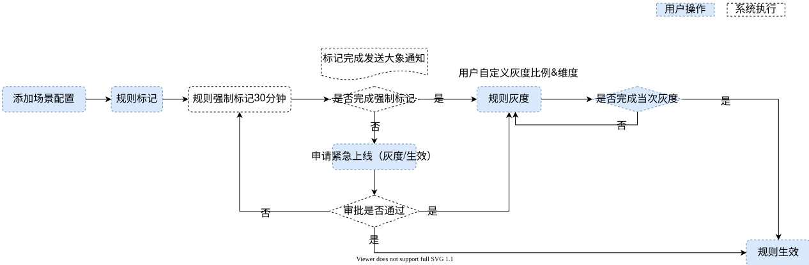
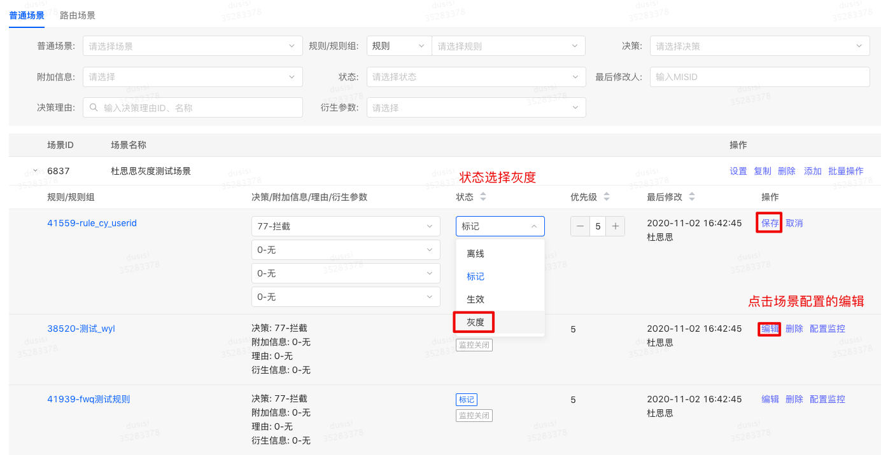
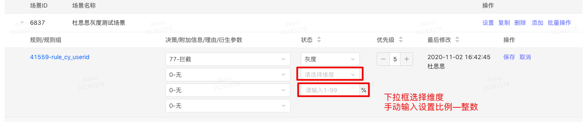
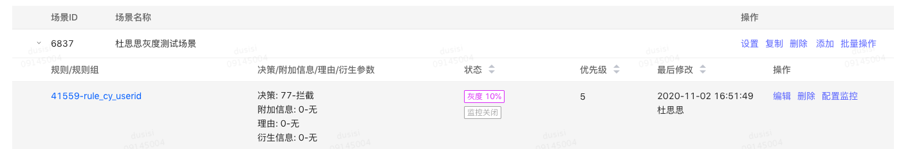
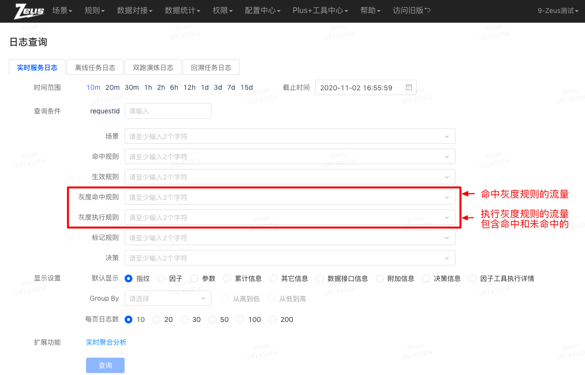
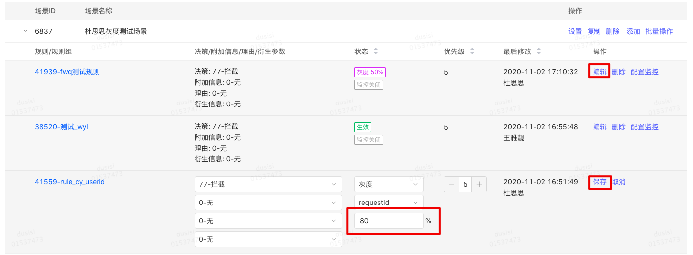

（废弃）说明：规则在场景中灰度
一、背景
灰度验证意义：相对于标记状态，做规则的执行但不返回决策，可以评估配置的逻辑是否符合预期。灰度状态是在标记基础上，做规则的执行但仅返回部分决策，可以评估配置的决策对整体的影响同时也能实现A/Btest的逻辑，相较于直接生效，可以小流量低风险确认规则上线后的影响
策略PM角度灰度来带的价值：安全保障_小流量线上验证规则上线前后对业务的影响
⚠️⚠️ 此处返回决策的定义是在Zeus同业务交互的接口GetDecisionResult（说明：Zeus在线服务RPC接入文档）中，decisionIdList将会包含命中生效和灰度规则的决策。
|
成员变量 |
类型 |
含义 |
|---|---|---|
|
requestId |
String |
请求ID |
|
businessCode |
int |
请求业务方ID |
|
sceneId |
int |
场景ID |
|
decisionIdList |
List<Integer> |
决策id列表 |
|
sceneConfDetailList |
List<SceneConfDetail> |
命中规则对应的场景配置信息，包括状态、规则的决策、理由、优先级等 |
|
factorResultJson |
String |
当前场景所依赖所有因子的结果，json格式 |
|
hitRuleFactorResultJson |
Map<Integer, String> |
当前场景命中规则所依赖的因子 key: ruleId value: 因子结果的json字符串，其中key是因子名，value是因子结果 |
|
errMsg |
String |
错误信息 |
此处，decisionIdList 和 sceneConfDetailList 已包含了生效规则和灰度规则的命中结果，从结果中无法区分出灰度规则（灰度规则 status=48，结果内 status 被修改为 64 生效状态），可以通过查询实时日志进行区分。
二、名词解释
无
三、操作指南
1.用户操作流程说明

- 场景配置中添加逻辑：场景+规则+决策+决策理由+决策附加信息+决策衍生参数+优先级+状态（生效、标记、离线、灰度）为唯一条件，注意灰度比例不同仍算做同一个场景配置，因此不允许重复添加
2.Quick Start
3.详细操作流程说明
Step1: 添加灰度场景配置
|
说明 |
页面 |
|---|---|
|
【添加“灰度”场景配置】
|
   |
Step2: 验证恢复执行结果
|
说明 |
页面 |
|---|---|
|
【实时日志查询】
|
 |
Step3: 灰度状态结束（取消灰度/转为生效、标记离线）
|
说明 |
页面 |
|---|---|
|
【灰度状态结束】
|
 |
4.特殊说明
（1）目前灰度可支持选择的维度：
- 默认：request、userid
-
支持业务定制化：
- 本期若需要增加灰度维度可联系@杜思思@范文青@王雅靓
- 后期将支持管理员在业务在Zeus前端进行配置
（2）在日志查询中，灰度流量和命中灰度规则需要通过筛选条件进行区分
四、FAQ
Q1：灰度执行的逻辑是怎样得到？
--A：给请求的信息打上java随机数，随机数符合用户设定区间的返回决策按照生效处理，不符合的不返回按照标记处理
Q2：目前灰度的维度不满足业务诉求，如何增加灰度支持的维度？
--A：见3.4.1目前灰度可支持选择的维度的支持业务定制化部分，默认：request、userid，若需要增加灰度维度可联系@杜思思@范文青@王雅靓
Q3：灰度的维度除支持参数外，还支持普通因子、累计因子等扩展类型因子么？
--A：目前不支持因子作为灰度维度，短期内也不计划支持
Q4：规则从标记到灰度为什么需要进行强制标记30分钟？而规则从灰度到生效不需要进行强制灰度的限制呢？
--A：灰度的本质是挑选部分流量作为线上规则进行执行，被选中执行的灰度规则的决策结果是实时返回的，选中执行的灰度规则的所有逻辑都是和线上规则一致的。可以认为，生效状态其实就是灰度比例100%的一种特殊灰度状态。
因此从标记到灰度，必须强制标记30分钟，确认规则的执行结果是符合预期的，才能将状态改为灰度。
而灰度状态下，规则的执行结果是否符合预期已经通过经过强制标记验证过了，从灰度状态到生效状态不需要再经过一个强制灰度的过程。
Q5：规则灰度需要受静默期的限制么？
--A：受静默期限制，因此在灰度比例、维度修改、灰度状态变更等都会受到静默期限制
Q6：规则灰度流量的比例可设置的数据范围是？
--A：在（0.100）之间的整数，需要大于0且小于100
Q7：怎么知道自己的业务方使用是哪种决策汇总方式？我所在的业务方可以直接使用么？
--A：Zeus产品经过跟各业务方技术团队调研，确认以下业务方的决策汇总方式并给出您所在业务方是否可以直接使用的解决，尚未全部枚举
各业务方汇总决策的方式
|
业务方/风险阈 |
businessid |
决策汇总方 |
决策汇总方式 |
信息反馈人 |
是否可以直接使用规则灰度 |
是否业务侧RD已经做完兼容 |
|---|---|---|---|---|---|---|
|
业务安全 |
1,23,24,25,26,27,28,67,78,90,3,4,5,37,38,45,96,97,91,98,142 |
Tatooine接入，Tatooine汇总决策 |
sceneConfDetailList |
陈麒佰 |
是 |
是 |
|
内容安全 |
35,60, |
保时洁接入， 保时洁汇总决策 |
sceneConfDetailList |
田飞 吴昊 唐飞 |
否 |
否，1.22已发送征集通知，预计1.29完成兼容 |
|
验证中心 |
6 |
yoda接入， yoda汇总决策 |
sceneConfDetailList |
李瑞 |
否 |
否，1.22已发送征集通知，预计1.29完成兼容 |
|
支付安全 |
40,52,54,55,53,126, |
warden接入，warden汇总决策 |
sceneConfDetailList |
李东阳 |
否 |
否，1.22已发送征集通知，预计1.29完成兼容 |
|
生态金融 |
49,73,75,108,109,110,111,112,113,114,115,116,117,124,134,123 |
审批系统接入， 审批系统汇总决策 |
sceneConfDetailList |
翁良 |
否 |
否，1.22已发送征集通知，预计1.29完成兼容 |
|
-待补充- |